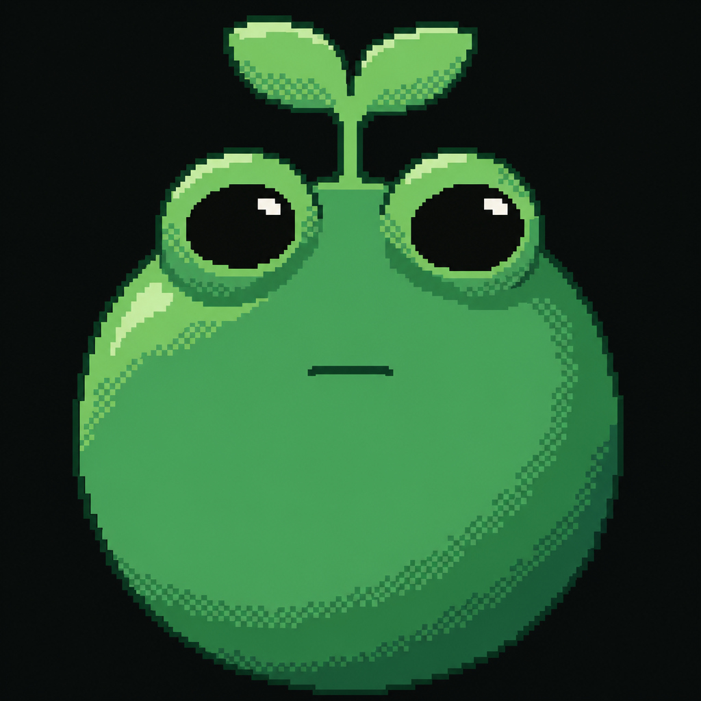
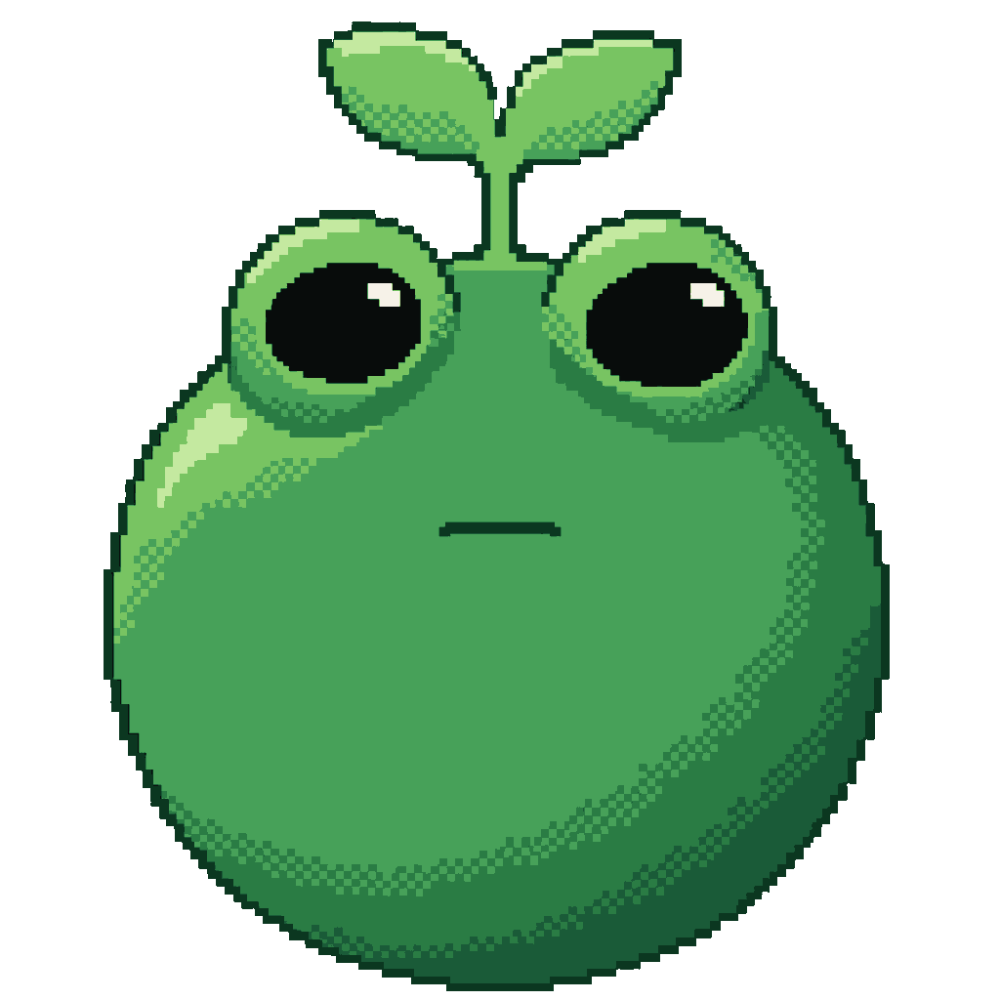

Traced from the generated image into an exact pixel grid in the Meadow palette. Every cell is one of 8 palette colours; the background is transparent. Icons at 32 and 16 px are drawn natively, not shrunk.

Generated (Sunburst 2.6)

Exact master · the logo file (matches the image)
Traced grid
Traced, on light
Favicon in a browser tab, at real size.
In design/brand/mark/: stackspirit-mark-master.png (the logo: exact match to the image, 8 colours, transparent) · stackspirit-mark.svg (clean 8 px grid as vector) · stackspirit-mark-1024.png · icon-32.svg · icon-32.png · icon-16.svg · icon-16.png · grids: grid.json, icon-32.json, icon-16.json